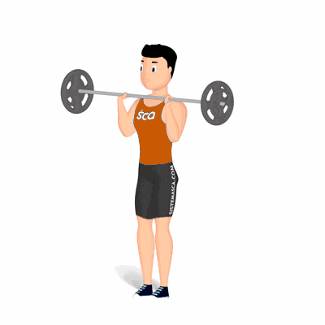

Split Jerk

O exercício trabalha diversas partes do corpo. Auxilia na definição e fortalecimento dos músculos e queimar calorias. Estimula a coordenação motora, força e explosão. Nível de execução avançado.
Ficha Técnica
Tipo: CrossFit
Grupo Muscular: Corpo
Aparelho: Nenhum
Músculos: Nenhum
Como realizar
- Na posição em pé, 2. Pegue uma barra reta, a pegada em largura superior à dos ombros;
- Com a palma da mão virada para baixo, posicione a barra a sua frente na altura dos ombros, 4. Os cotovelos deverão ficar apontados para baixo, essa é posição inicial do exercício;
- Com uma pequena explosão, empurre a barra para cima com a força dos braços e, ao mesmo tempo, um pequeno salto, aplicando a técnica da "tesoura" sobre a posição das pernas;
- Retorne à posição inicial e repita os movimentos.
 RC STORE
RC STORE